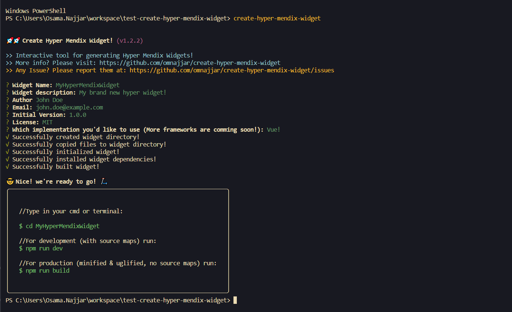

create-hyper-mendix-widget
“A CLI tool for generating Hyper Mendix Widgets”

⚡ Hyper Mendix Widget? 🤔
It is a design pattern for creating mendix widgets, by which we split widgets' creation into two main independent responsibilities, the first one is passing widget's props & mouting widget to the DOM, and the second one is building widget's core functionality.
In other words ✋
It is a mendix widget that makes use of dojo for only passing widgets' properties and mounting the widget to the DOM, & Any other javascript framework or library for building widget structure & functionality (e.g React, Vue, Hyperapp, JQuery, ...etc).
(Please note that dojo here is considered as a part of mendix, as mx dojo _widgitbase will receive widgets props which is set in the modeler, however dojo will be any other props injecter or widgets loader.)Advantages 🏅
- Bring in ~ all Js frameworks out there together with Mendix.
- Write complex widgets with more confidence.
- Don't mix platform/frameworks/libraries with each other.
- 👉 Instead provide a communication protocol.
- Free up widgets' testing from the modeler => faster development.
- Improve Developer Experience (DX).
CLI Instalation & Usage 💻
1. Global Instalation
.......
//in your terminal or cmd
$ npm install -g create-hyper-mendix-widget
.......
2. Run
3. Available Scripts
.......
//in your terminal or cmd run the following script for a dev build:
$ npm run dev
// and for production build run the following script:
$ npm run build
.......
Available Implementations 😎
- React.
- Vue.
- Hyperapp.
- ES6 Vanilla Javascript.
- More frameworks are commig soon...!!